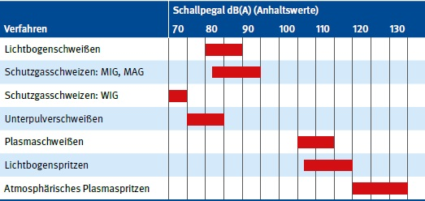

Bei Schweiß-, Schneid- und verwandten Verfahren ist die Einwirkung von gehörschädigendem Lärm gegeben (siehe Tabelle 6).
Tabelle 6 Schallpegel verschiedener Lichtbogenverfahren

Quelle: Praxiswerte aus Messungen von BGHM-Mitgliedsbetrieben
Die erforderlichen Lärmschutzmaßnahmen sind vom jeweiligen Lärmbereich abhängig:
Maßnahmen in Bereichen mit Beurteilungspegeln ab 80 dB(A) (LEX, 8h)
Zusätzliche Maßnahmen in Bereichen mit Beurteilungspegeln ab 85 dB(A) (LEX, 8h)
Abb. 9-1 Gebotsschild "Gehörschutz benutzen" (Lärm- und Vibrations-Arbeitsschutzverordnung)
Gehörschutz, z. B. Gehörschutzstöpsel, Kapselgehörschutz, Gehörschutzwatte, ist vom Arbeitgeber oder von der Arbeitgeberin bereitzustellen und von den Beschäftigten zu benutzen.
Bei Schweißarbeiten über Schulterhöhe ist schwer entflammbarer Gehörschutz zur Verfügung zu stellen.
Einzelheiten zum Thema Lärm enthält die DGUV Information 209-023 "Lärm am Arbeitsplatz.